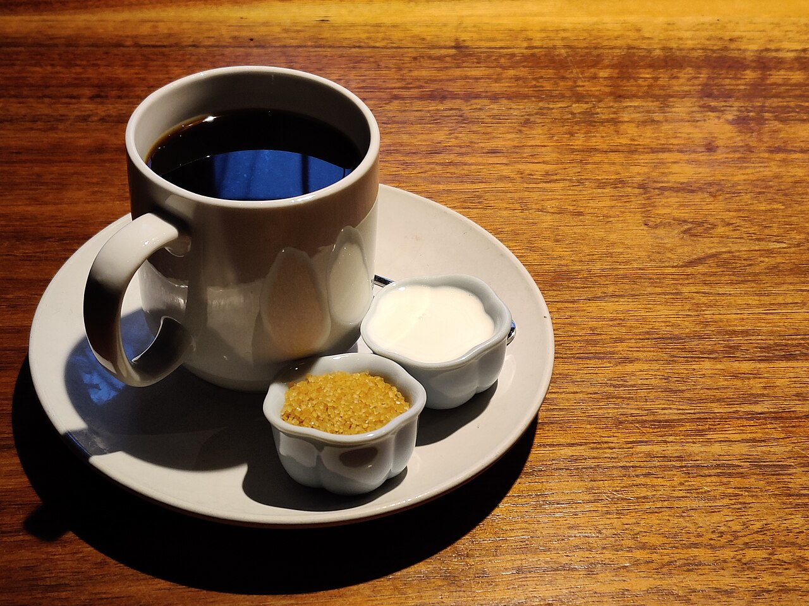

仕事帰りに、ふらっと立ち寄れる気軽さがありそうです。
口コミ
以下は実際のお客様の声ではなく、イメージとして作成した例です。
少し疲れた日に、ゆっくり座って一杯を飲む時間があるだけで、気持ちがほどけます。外の空気を忘れて、ほっと一息つけるお店だったらいいなと思います。
友人との待ち合わせにも、ひとりで本を読む時間にも使えそうな場所だと、勝手に想像しています。慌ただしい一日の終わりに、温かい飲み物を前にして、今日あったことをぼんやり思い返す。そんな帰り道の寄り道が似合う一杯に、出会えたらうれしいです。

宮古以外・撮影地不明撮影地: 米国インディアナ州の飲食店(宮古ではありません)

宮古で撮影撮影地: 宮古市中心部(月山から望む)

宮古以外・撮影地不明撮影地: 日本国内の海の夕景(詳しい撮影地は不明。宮古とは限りません)
本ページはデザイン確認用の例です。お店の雰囲気はInstagramでご覧ください。